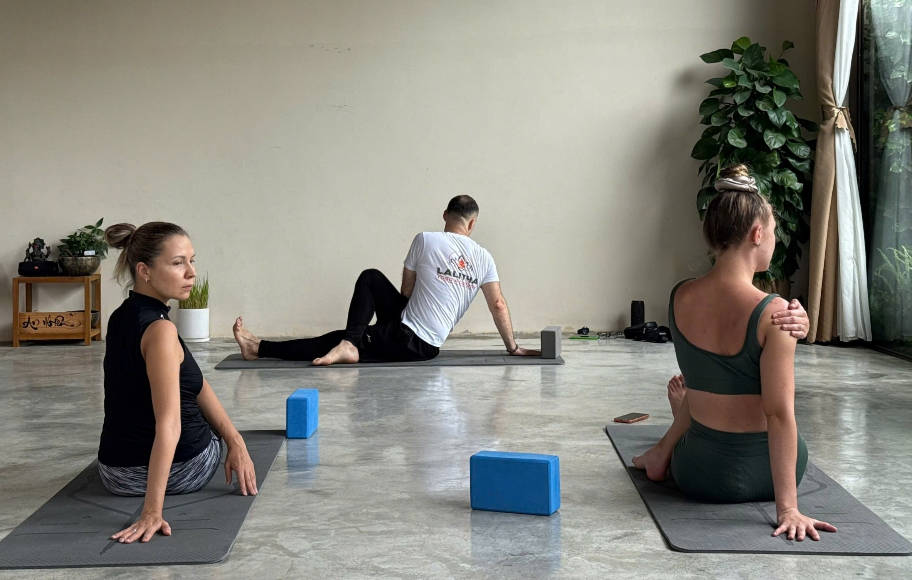
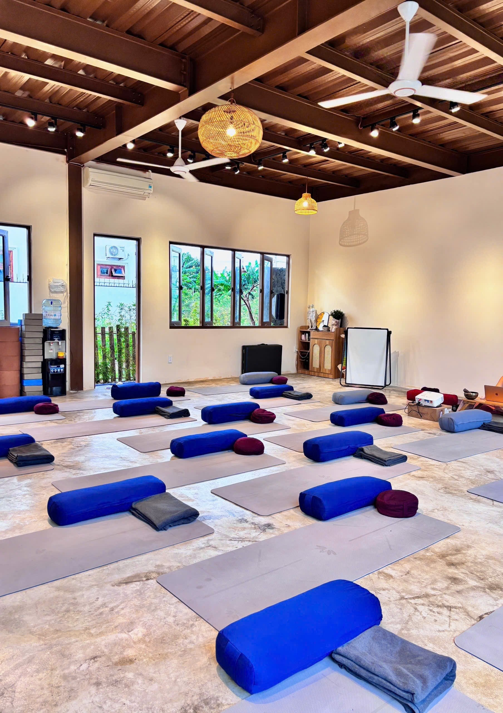
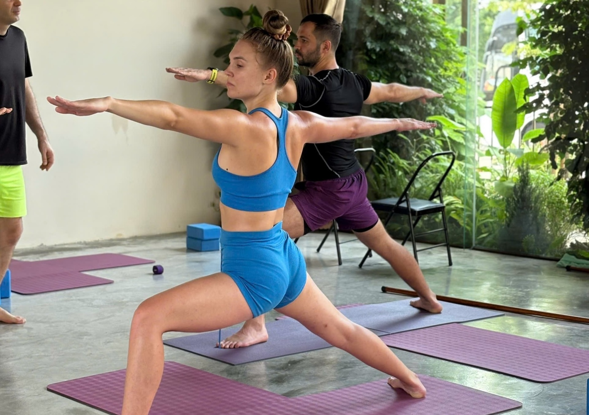
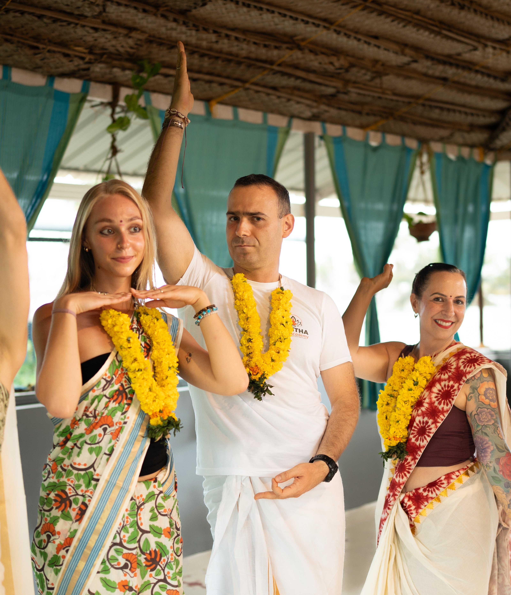
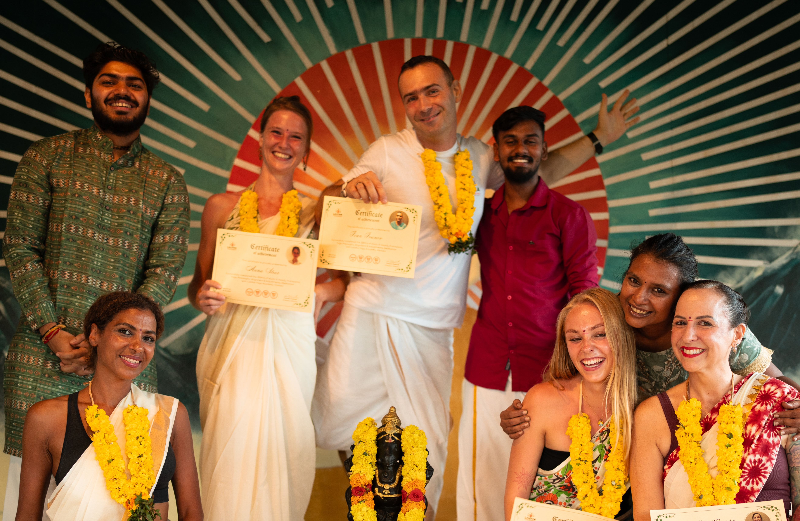
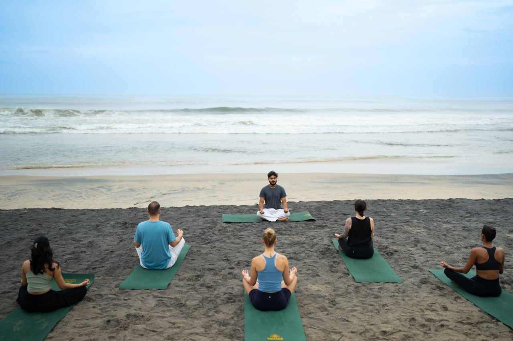

Хатха-йога
Спокойная, вдумчивая практика: базовые асаны, точная отстройка, длинные удержания и много внимания дыханию. Идеальна, чтобы начать путь в йоге или навести порядок в основе.
Хатха · Аштанга · Дананг · Пранайама · Медитация
Меня зовут Иван, я преподаю йогу с внимательной работой с телом, правильным дыханием и концентрацией. Занятия по 90 минут с нагрузкой по вашим силам.

Никакой мистики — только вы, ваше дыхание и честная работа с телом. Я объясняю, показываю и слежу, чтобы каждый безопасно двигался в своём темпе и по своим силам.
Направления
Оба класса строятся на дыхании и внимании к телу. Разница — в темпе и характере практики.

Спокойная, вдумчивая практика: базовые асаны, точная отстройка, длинные удержания и много внимания дыханию. Идеальна, чтобы начать путь в йоге или навести порядок в основе.

Динамичная последовательность, где движение связано с дыханием в единый поток. Развивает силу, выносливость и концентрацию. Слежу за интенсивностью и состоянием, не доводим до предела.
Подход
Учу дышать правильно: дыхание задаёт ритм практике, помогает в асанах и концентрации, успокаивает беспокойный ум.
Рассказываю о пользе с медицинской и анатомической точки зрения, а также о том, как это объясняют в традиции Йоги и Аюрведы.
Я не перегружаю. У каждой асаны есть вариации — подберу ту, которая подходит именно вашему телу и уровню сегодня.
Обучался преподаванию в Керале и живу в Индии по несколько месяцев в году. Передаю практику так, как учили меня, — последовательно, бережно и без спешки.

Дананг · ВьетнамПреподаватель
Мне 41 год. Впервые я приехал в Индию в 2015-м — познакомился с медитацией и аюрведой. С тех пор живу там по 4–6 месяцев в году и практикую в местных классах, где никто не соревнуется: асаны там — часть работы с дыханием и вниманием, а не спорт.
Преподаванию обучался в Керале, на юге Индии: ежедневная практика, анатомия, методика, философия. На занятиях объясняю, что происходит с телом и дыханием, и помогаю каждому работать на своём уровне — без перегрузок.
Путь
Познакомился с медитацией и аюрведой, прошёл курс аюрведического массажа.
По 4–6 месяцев в году живу и практикую в Индии. В местных классах йога — не фитнес и не соревнование: асаны там неотделимы от дыхания, концентрации и медитации. Такой йоге я и учу.
Сертификационный курс на юге Индии: ежедневная практика, анатомия, методика, философия — всё на английском. А после курса — самостоятельная практика: ко многим вещам приходишь только со временем.
Меня сбил рикша: перелом ключицы, повреждение бедренного нерва. Первый месяц рука почти не поднималась — подвижность вернули регулярная практика и растяжка. Теперь я на своём опыте знаю, как йога восстанавливает тело и почему нельзя перегружаться.
Преподаю хатху и аштангу в Дананге четыре раза в неделю. Помогаю ученикам заниматься безопасно и в своём темпе.



Отзывы
Отзывы публикуются с разрешения учеников.
Расписание
Четыре занятия в неделю. Каждое — 90 минут: разминка, основная работа и спокойное завершение.
Время указано ориентировочно и может меняться — актуальное расписание и место занятий уточняйте при записи.
ЗаписатьсяОнлайн
Та же практика — по видеосвязи: занимайтесь из любой точки мира, дома или в поездке.
Программа под ваши задачи и уровень: от первых шагов в йоге до работы над конкретными асанами, пранайамой и медитацией.
Это не запись, а полноценное занятие: я вижу вас на экране, поправляю отстройку асан и слежу за дыханием.
Занимаемся по видеосвязи — Zoom или Google Meet. Время подбираем вместе под ваш часовой пояс.
Напишите мне — договоримся об удобном времени и формате первого онлайн-занятия.
Записаться на онлайн-занятиеВопросы
Да. Нагрузка на занятии у каждого своя: я показываю варианты асан под разный уровень и слежу, чтобы никто не перегружался. Для первого раза лучше всего подойдёт класс хатха-йоги.
Хатха — спокойный темп, длинные удержания и подробная отстройка асан. Аштанга — динамичная последовательность, где движение связано с дыханием: больше силы, выносливости и ритма. Основа у обоих направлений общая.
Нет. Я преподаю йогу как практику для тела и ума: дыхание, движение, внимание. Без ритуалов, поклонения божествам и «тонких энергий» — только понятная и последовательная работа.
Удобную одежду, в которой легко двигаться, и хорошее настроение. Заниматься лучше через 2–3 часа после еды. Насчёт коврика напишите мне — подскажу, нужен ли свой.
Первый шаг
Напишите мне — расскажу о ближайших классах, отвечу на вопросы и помогу выбрать практику под ваш уровень.
Дананг · Вьетнам · занятия на русском языке